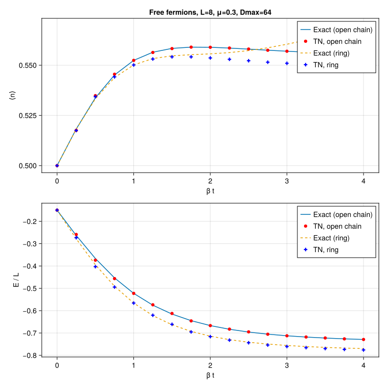

Free fermions at finite temperature
Imaginary-time evolution of a density matrix for spinless free fermions,
\[H = -t \sum_{\langle ij \rangle} \left( c^\dagger_i c_j + c^\dagger_j c_i \right) - \mu \sum_i n_i,\]
starting from the infinite-temperature state $\rho(0) = \mathbb{1}$ and sweeping the inverse temperature $\beta$. The thermal averages $\langle n \rangle$ and $E/L$ are compared against the exact single-particle (Fermi–Dirac) result at the same finite $L$, on two geometries:
- an open chain, which is a tree — belief propagation is exact there, so any deviation is bond truncation or the Trotter step;
- a ring, which has one loop — belief propagation is approximate, and the gap between the two curves is the loop correction.
This is the finite-temperature companion to Free fermions on a ring, which reaches the ground state by imaginary-time evolution of a state.
This example can be run from the command line with:
julia --project=examples examples/free_fermion_thermal/main.jlusing Canopy: identity_operator, BPMessages, belief_propagation, UndirectedEdge,
LeftAction, apply!, expect, Strang, trotterize, edge_coloring
using TensorKit
using TensorKitTensors.FermionOperators: f_num, f_hopping, fermion_space
using MatrixAlgebraKit: truncrank, trunctol
using Statistics: mean
using Printf
using CairoMakieThe purification picture, and where the factor of two lives
identity_operator is $\beta = 0$. Evolving it one-sided (action = LeftAction) with $\exp(-d\tau\,h_e)$ builds
\[X = e^{-\tau H}, \qquad \tau = n_\text{steps}\, d\tau,\]
and expect on a TensorNetworkOperator measures against $X X^\dagger / \operatorname{tr} X X^\dagger$, which is the thermal ensemble at
\[\beta = 2\tau .\]
So one one-sided step of size $d\tau$ advances $\beta$ by $2 d\tau$. (A SandwichAction step applies the gate on both sides and advances it by $4 d\tau$; the one-sided route is used here because it is also the cheaper one — the untouched physical leg stays in the QR environment.)
Exact single-particle reference
Both geometries are quadratic, so $\langle n \rangle$ and $E$ follow from the single-particle spectrum alone:
\[\langle n \rangle = \frac{1}{L} \sum_k f(\varepsilon_k), \qquad E = \sum_k \varepsilon_k f(\varepsilon_k), \qquad f(\varepsilon) = \frac{1}{e^{\beta \varepsilon} + 1},\]
with $\varepsilon_k = -2t\cos(\pi k/(L+1)) - \mu$ for $k = 1 \dots L$ on the open chain (hard-wall modes) and $\varepsilon_n = -2t\cos(2\pi n/L) - \mu$ for $n = 0 \dots L-1$ on the ring.
chain_spectrum(L, μ; t = 1.0) = [-2t * cos(π * k / (L + 1)) - μ for k in 1:L]
ring_spectrum(L, μ; t = 1.0) = [-2t * cos(2π * n / L) - μ for n in 0:(L - 1)]
function exact_thermal(ε, β)
f = @. 1 / (exp(β * ε) + 1)
return sum(f) / length(ε), sum(ε .* f) / length(ε)
endexact_thermal (generic function with 1 method)Free-fermion bond operators
The same edge decomposition as the ground-state example: the chemical-potential term is split over the endpoints of each bond by their degree, so that $\sum_e h_e = H$ exactly.
function bond_hamiltonians(edges, degrees; t = 1.0, μ = 0.0)
P = fermion_space(Trivial)
hop = f_hopping(ComplexF64, Trivial)
nop = f_num(ComplexF64, Trivial)
I1 = id(P)
return Dict(
e => -t * hop - (μ / degrees[first(e)]) * (nop ⊗ I1) -
(μ / degrees[last(e)]) * (I1 ⊗ nop)
for e in edges
)
endbond_hamiltonians (generic function with 1 method)Sweeping β
The evolution is incremental: the network is carried forward through the whole βs grid and measured at each point, rather than restarted from $\mathbb{1}$ for every temperature. BP is re-converged before each measurement (and periodically during the evolution) so the Bethe environments are current.
function beta_sweep(edges, degrees, verts, βs; t = 1.0, μ = 0.0, dτ = 0.02, Dmax = 64)
P = fermion_space(Trivial)
hams = bond_hamiltonians(edges, degrees; t, μ)
circuit = trotterize(hams, dτ, Strang(edge_coloring(edges)))
trunc = truncrank(Dmax) & trunctol(; atol = 1.0e-12)
ρ = identity_operator(ComplexF64, edges, P)
msgs = BPMessages(ρ)
nop = f_num(ComplexF64, Trivial)
L = length(verts)
n̄ = Float64[]
Ē = Float64[]
τ = 0.0 # accumulated one-sided time; β = 2τ
ϵmax = 0.0 # worst truncation error over the whole sweep
nsteps = 0
for β in βs
target = β / 2
while τ + dτ / 2 < target
_, _, info = apply!(ρ, msgs, circuit; action = LeftAction, trunc)
ϵmax = max(ϵmax, info.ϵ)
τ += dτ
nsteps += 1
iszero(mod(nsteps, 10)) &&
(msgs = belief_propagation(msgs, ρ; maxiter = 200, tol = 1.0e-11))
end
msgs = belief_propagation(msgs, ρ; maxiter = 400, tol = 1.0e-12)
push!(n̄, mean(real(expect(ρ, msgs, nop, v)) for v in verts))
push!(Ē, sum(real(expect(ρ, msgs, h, (first(e), last(e)))) for (e, h) in hams) / L)
end
return n̄, Ē, ϵmax
endbeta_sweep (generic function with 1 method)Geometries
chain_edges(L) = [UndirectedEdge(j, j + 1) for j in 1:(L - 1)]
ring_edges(L) = [UndirectedEdge(min(j, mod1(j + 1, L)), max(j, mod1(j + 1, L))) for j in 1:L]
chain_degrees(L) = Dict(j => (j == 1 || j == L) ? 1 : 2 for j in 1:L)
ring_degrees(L) = Dict(j => 2 for j in 1:L)ring_degrees (generic function with 1 method)Run and plot
function main(; L::Int = 8, Dmax::Int = 64, t::Real = 1.0, μ::Real = 0.3,
βs = 0.0:0.25:4.0, dτ::Real = 0.02)
βs = collect(βs)
verts = 1:L
println("Free fermions at finite temperature L=$L Dmax=$Dmax t=$t μ=$μ dτ=$dτ")
exact_chain = [exact_thermal(chain_spectrum(L, μ; t), β) for β in βs]
exact_ring = [exact_thermal(ring_spectrum(L, μ; t), β) for β in βs]
println(" open chain (BP exact on a tree)")
n_chain, E_chain, ϵ_chain = beta_sweep(chain_edges(L), chain_degrees(L), verts, βs; t, μ, dτ, Dmax)
println(" ring (one loop: BP approximate)")
n_ring, E_ring, ϵ_ring = beta_sweep(ring_edges(L), ring_degrees(L), verts, βs; t, μ, dτ, Dmax)
@printf " max truncation error: chain %.3e, ring %.3e\n" ϵ_chain ϵ_ring
@printf " %-6s %-12s %-12s %-12s %-12s\n" "β" "⟨n⟩ chain" "exact" "⟨n⟩ ring" "exact"
for (i, β) in enumerate(βs)
@printf " %-6.2f %-12.8f %-12.8f %-12.8f %-12.8f\n" β n_chain[i] exact_chain[i][1] n_ring[i] exact_ring[i][1]
end
fig = Figure(size = (760, 760))
ax1 = Axis(fig[1, 1]; xlabel = "β t", ylabel = "⟨n⟩",
title = "Free fermions, L=$L, μ=$μ, Dmax=$Dmax")
lines!(ax1, βs, first.(exact_chain); label = "Exact (open chain)")
scatter!(ax1, βs, n_chain; label = "TN, open chain", color = :red)
lines!(ax1, βs, first.(exact_ring); label = "Exact (ring)", linestyle = :dash)
scatter!(ax1, βs, n_ring; label = "TN, ring", color = :blue, marker = :cross)
axislegend(ax1; position = :rt)
ax2 = Axis(fig[2, 1]; xlabel = "β t", ylabel = "E / L")
lines!(ax2, βs, last.(exact_chain); label = "Exact (open chain)")
scatter!(ax2, βs, E_chain; label = "TN, open chain", color = :red)
lines!(ax2, βs, last.(exact_ring); label = "Exact (ring)", linestyle = :dash)
scatter!(ax2, βs, E_ring; label = "TN, ring", color = :blue, marker = :cross)
axislegend(ax2; position = :rt)
outdir = joinpath(@__DIR__, "figs")
mkpath(outdir)
outfile = joinpath(outdir, "free_fermion_thermal.svg")
save(outfile, fig)
println("wrote $outfile")
return fig
end
main()Free fermions at finite temperature L=8 Dmax=64 t=1.0 μ=0.3 dτ=0.02
open chain (BP exact on a tree)
ring (one loop: BP approximate)
max truncation error: chain 1.058e-06, ring 9.651e-07
β ⟨n⟩ chain exact ⟨n⟩ ring exact
0.00 0.50000000 0.50000000 0.50000000 0.50000000
0.25 0.51755089 0.51824354 0.51748919 0.51817409
0.50 0.53484161 0.53377122 0.53431262 0.53329368
0.75 0.54551058 0.54514560 0.54418793 0.54386559
1.00 0.55241415 0.55241478 0.55010923 0.55014546
1.25 0.55635903 0.55647439 0.55308246 0.55331689
1.50 0.55828614 0.55838309 0.55417487 0.55467728
1.75 0.55901273 0.55900683 0.55415751 0.55524021
2.00 0.55893670 0.55893852 0.55363049 0.55565900
2.25 0.55855877 0.55854156 0.55294229 0.55629044
2.50 0.55806159 0.55802047 0.55224296 0.55728894
2.75 0.55745732 0.55748083 0.55150295 0.55868682
3.00 0.55696836 0.55697084 0.55096019 0.56045117
3.25 0.55652243 0.55650741 0.55050338 0.56251972
3.50 0.55612060 0.55609165 0.55012440 0.56482173
3.75 0.55570052 0.55571751 0.54976579 0.56728906
4.00 0.55537364 0.55537650 0.54951723 0.56986131
wrote /mnt/home/ldevos/Projects/Canopy.jl/densitymatrix/docs/src/examples/free_fermion_thermal/figs/free_fermion_thermal.svg

The open-chain points sit on the exact curve to plotting accuracy: belief propagation is exact on a tree, so the only error is the Trotter step and the bond truncation. The ring points track the exact ring curve but drift off it as $\beta$ grows and correlations wrap the loop — that gap is the Bethe (loop) approximation, not a truncation artefact.
This page was generated using Literate.jl.